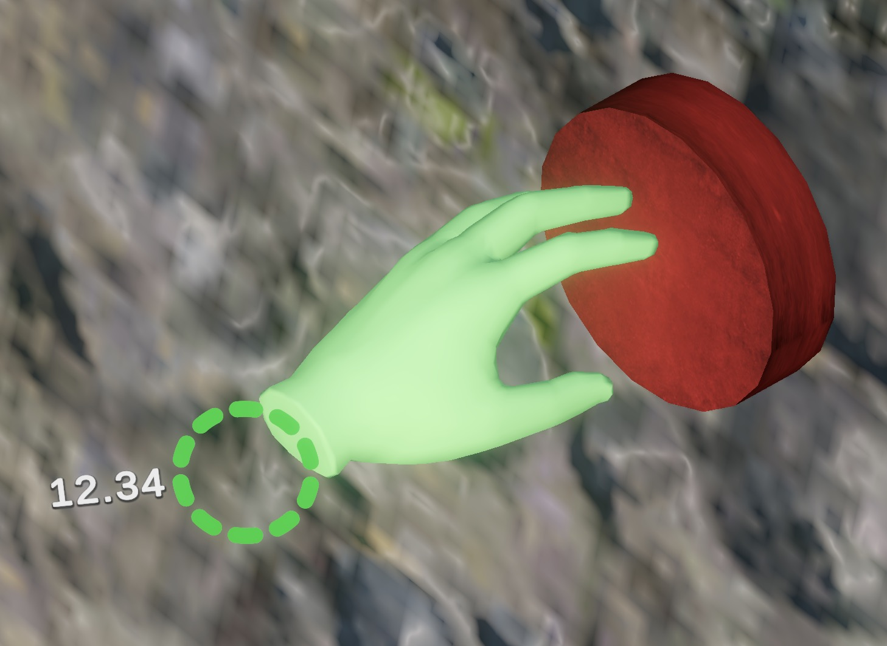
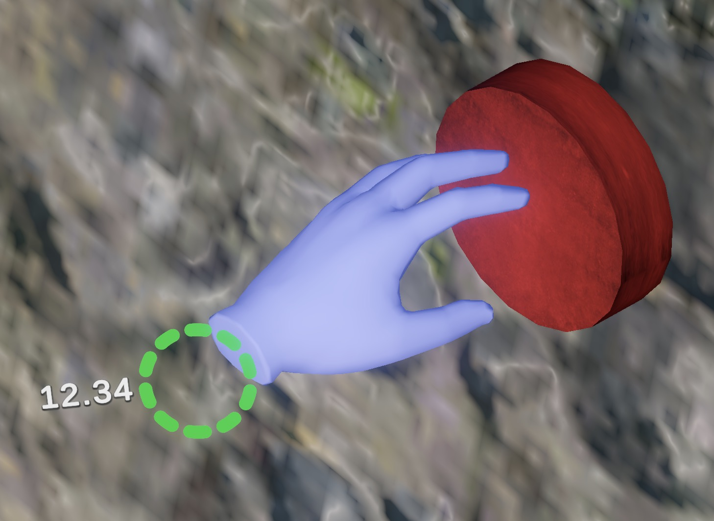
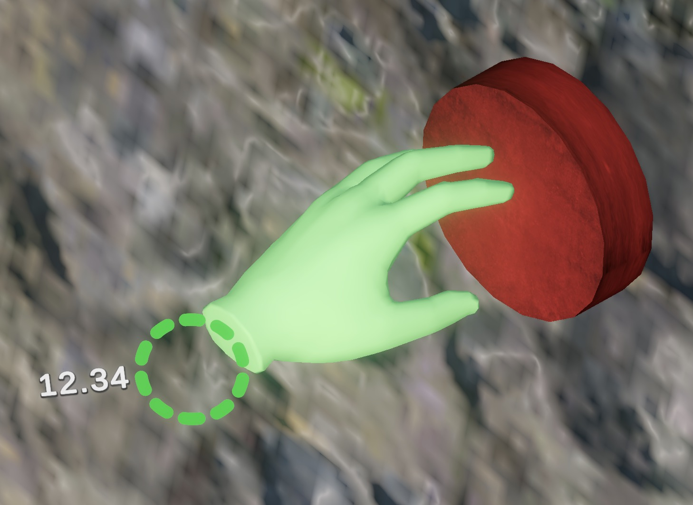
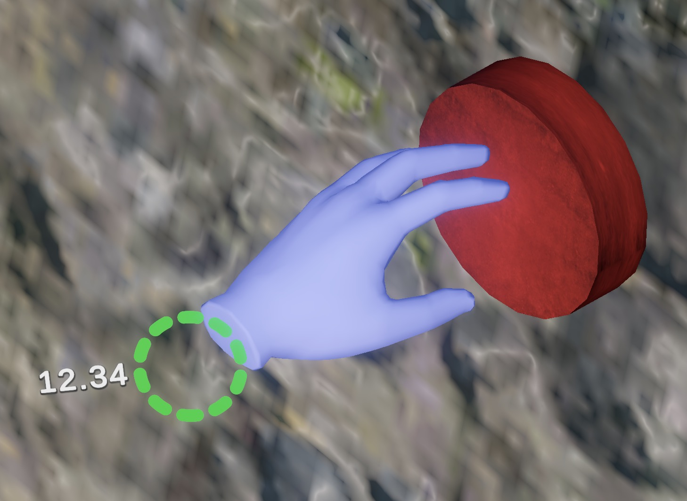

Do Weight-Changing Controllers representing Stamina improve Game Experience in Virtual Reality?
Winter 2023/2024
Meine Bachelorarbeit im Fach Medieninformatik war die Entwicklung eines VR-Games, das mithilfe von gewichtsverändernden Controllern die Spielerfahrung verbessern sollte, indem mit höherer Erschöpfung auch die Controller schwerer wurden.
Umgesetzt wurde es in Unity und mit PumpVR, einem Prototypen, den Kalus et al. [1] an der Universität Regensburg entwickelt hatten.
Validation der Controller.
PumpVR war bislang nur immer voll befüllt worden — in meiner Studie sollte wiederholbar mit kleinen Schritten gearbeitet werden, um insgesamt zehn verschiedene Gewichtslevel repräsentieren zu können.
Mit einem Arduino-Skript wurden die Controller auf einer Waage schrittweise befüllt, um konsistente und passende Füllstände abzusichern.

Mit Unity erstellte ich dann ein Kletterspiel, in dem Erschöpfung generiert werden sollte. Ein bergiges Umfeld mit fixen Kletterpunkten wurde entworfen, in dem in gesetzter Zeit so viel Höhe wie möglich erreicht werden sollte.
Controller und Repräsentation.
Die Hände der spielenden Person werden durch HTC Vive Tracker in der virtuellen Welt positioniert, was mit dem OpenXR-Package relativ knifflig umzusetzen war.
Die grüne Anzeige neben den Händen ist das Exhaustion Meter, welches in der Anwendung den Füllstand der Wasserreservoirs spiegelt. Je höher die Spieler:in ohne Pause klettert, desto erschöpfter wird sie. Pro Erschöpfungslevel werden ~50g Wasser auf der Hand hinzugefügt, bis zum Maximum von 500g pro Hand.
 



Da der User keinen Greifknopf hatte, wurde durch die Nähe zum Griff das Festhalten getriggert. Um den Status zu repräsentieren, färben sich die Hände um (und werden als zugegriffen dargestellt, hier zu Visualisierungszwecken nicht): Grün ist die aktiv führende Hand, die zweite Hand an der Wand wird blau markiert.
In einer Studie mit 24 Teilnehmenden wurde eine nicht-gewichtete Version des Spiels mit aktiver Gewichtsveränderung verglichen und in der Kondition mit gewichteten Controllern verbesserte Spielfreide (PXI Enjoyment) und höherer Realismus (IPQ Experienced Realism) festgestellt. Die subjektive Anstrengung der Teilnehmenden war mit Gewichten höher als ohne.
Die Bachelorarbeit wurde mit 1,3 benotet.